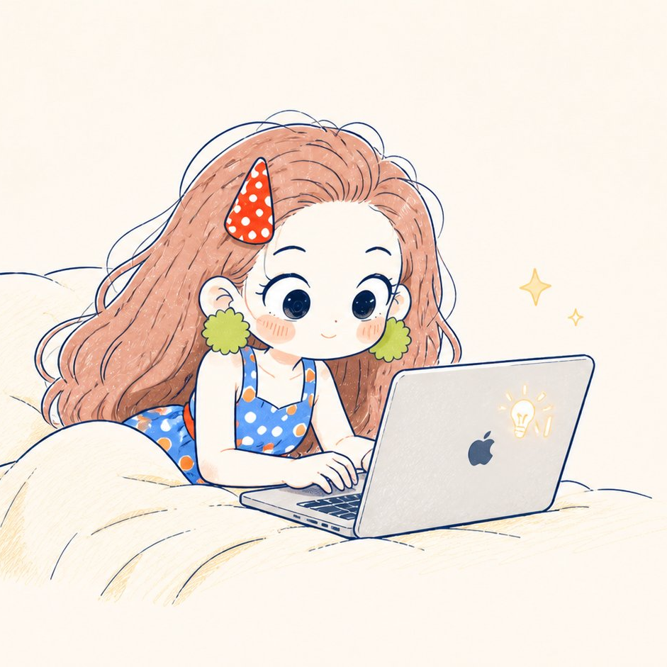
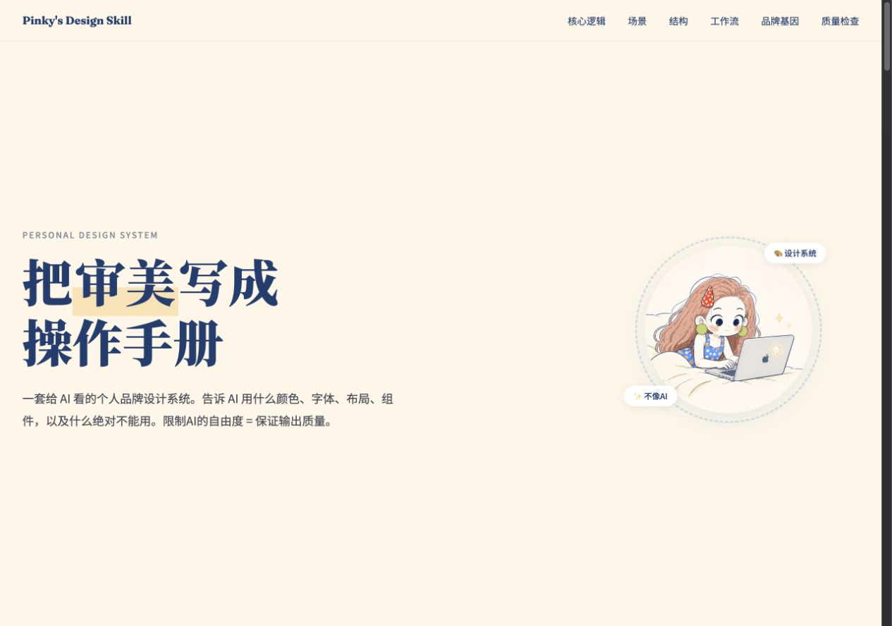
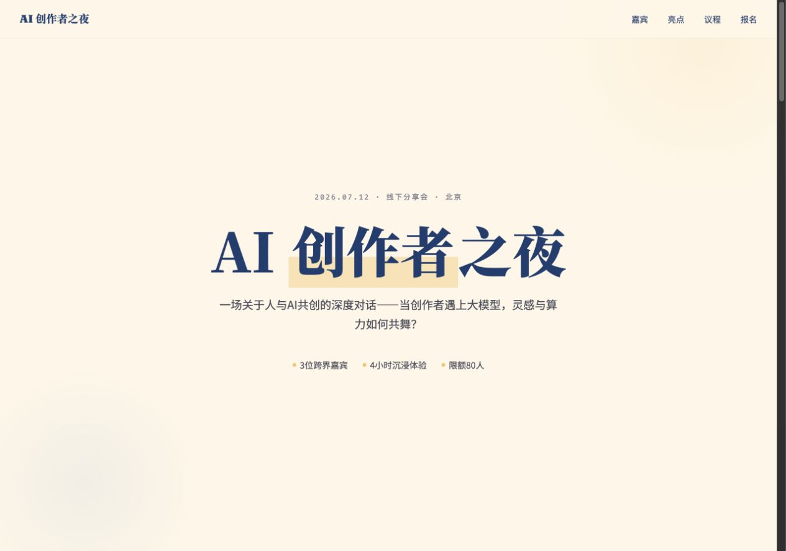
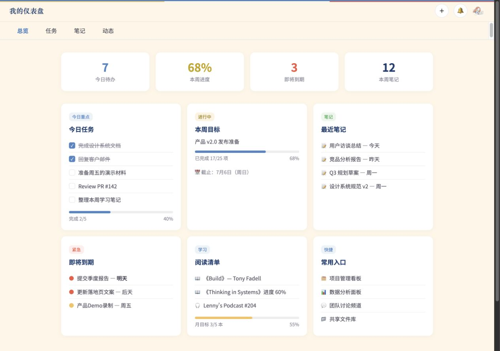
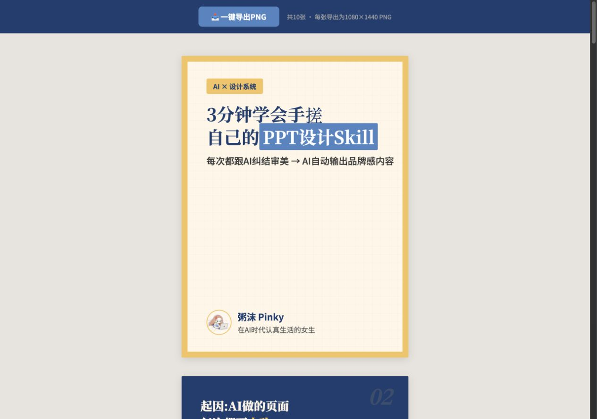
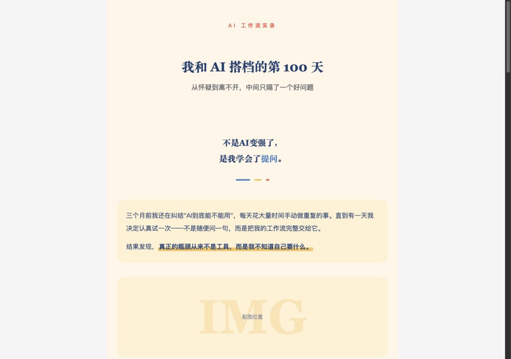
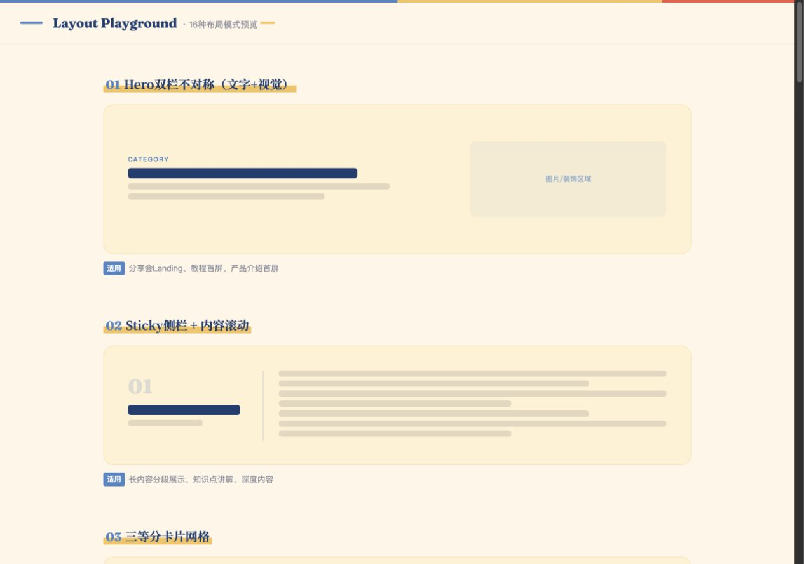
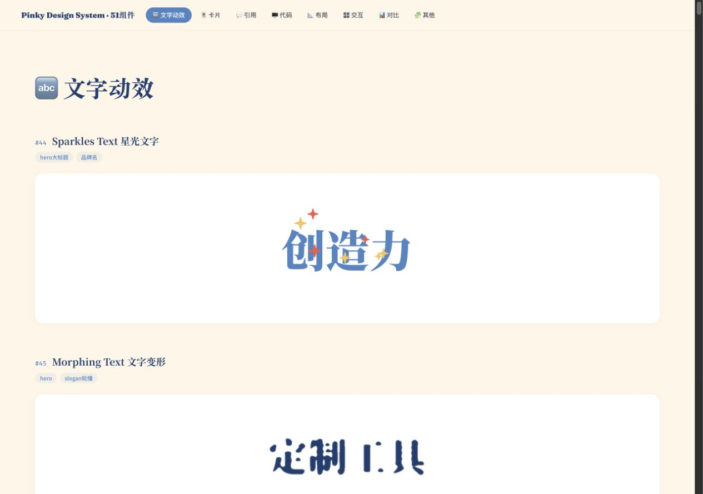

粥沫 Pinky Design System同一套设计，
长出我的视觉身份。
原版字体、排版、层级与交互 · 粥沫头像与品牌配色

01
教程型 · Design Skill 拆解
保留「把审美写成操作手册」的原版结构，换上粥沫头像与三色。
打开预览 ↗
02
活动页 / Landing
活动介绍、嘉宾、亮点、议程与 CTA；活动信息为演示文案。
打开预览 ↗
03
功能页 / App
总览、任务、笔记、动态与新建任务弹窗。
打开预览 ↗
04
小红书图文卡片
原版卡片排版、页码与导出交互，使用粥沫头像与署名。
打开预览 ↗
05
公众号排版
原版杂志编号风与内联样式，使用粥沫色板与头像。
打开预览 ↗
06
布局 Playground
保留原版布局模式，用统一的品牌三色预览。
打开预览 ↗
07
组件库
保留组件与交互，头像和图片示例替换为 Pinky 素材。
打开预览 ↗